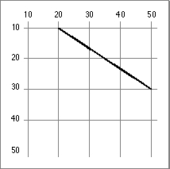
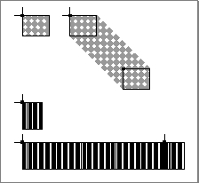
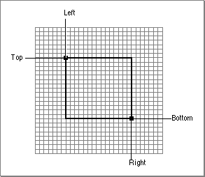
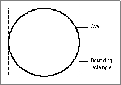
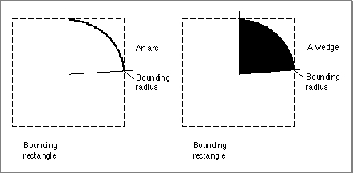
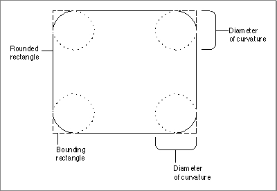
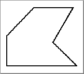
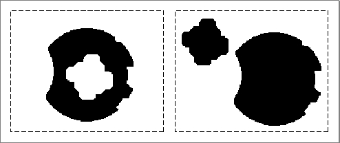
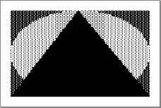
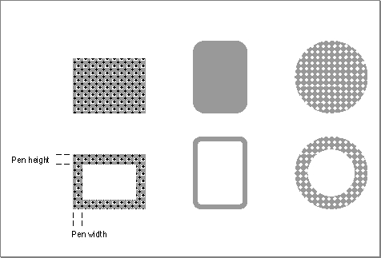

Images
QuickDraw provides a plethora of routines for drawing different kinds of images. These routines typically require that you start at a particular location in a graphics port and then move the graphics pen. The graphics pen is a metaphorical device for performing drawing operations onscreen. Your application can set this pen to different sizes, patterns, and colors.You specify where to begin drawing by placing the pen at some location in the window's local coordinate system, and then specifying an act of drawing, usually from there to another location. Take, for example, the following two lines of code:
MoveTo(20,10); LineTo(50,30);TheMoveToprocedure places the graphics pen at a point with a horizontal coordinate of 20 and a vertical coordinate of 10 in the local coordinate system of the graphics port, and theLineToprocedure draws a line from there to a point with a horizontal coordinate of 50 and a vertical coordinate of 30, as shown in Figure 1-6.
Whenever you draw into a graphics port, the characteristics of its graphics pen determine how the drawing looks. These characteristics areThe pen's initial settings are a size of 1 pixel by 1 pixel, a solid black pattern, a pattern mode in which the black writes over everything, and visible ink.
- pen location, specified in a graphics port's local coordinates
- pen size, specified by a width and height in pixels
- pen pattern, which defines, in effect, the ink that the pen draws with, ranging from solid black to intricate, multicolor patterns
- pattern mode, also called transfer mode, which specifies how the pen pattern interacts with white or any existing drawing that the pattern overlays
- pen visibility, specified by an integer indicating whether drawing operations will actually appear--for example, for 0 or negative values, the pen draws with "invisible" ink
A pattern is an image that can be repeated indefinitely to form a repeating design, such as stripes, when drawing lines and shapes or when filling areas on the screen. There are two type of patterns: bit patterns and pixel patterns. A bit pattern is an 8-by-8 pixel image drawn by default in black and white, although any two colors can be used on a color screen. A pixel pattern can use additional colors and can be of any width and height that's a power of 2.
By starting at a particular position and moving the graphics pen, you can use QuickDraw procedures to define and directly draw a number of graphic shapes using the size and pattern of the graphics pen. Several procedures and the shapes they produce are listed here.
Procedure Resulting shape LineTo Line DrawChar Character FrameRect Rectangle FrameOval Oval FrameRoundRect Rounded rectangle FrameArc Arc A line is defined by two points: the current location of the graphics pen and its destination. The pen hangs below and to the right of the defining points, as shown in Figure 1-7, where two lines are drawn with different bit patterns and pen sizes.
Figure 1-7 Lines drawn with different bit patterns and pen sizes

A rectangle can be defined by two points--its upper-left and its lower-right corners, as shown in Figure 1-8, or by four boundaries--its upper, left, lower, and right sides. Rectangles are used to define active areas on the screen, to assign coordinate systems to graphical entities, and to specify the locations and sizes for various graphics operations.
QuickDraw also provides routines that allow you to perform a variety of mathematical calculations on rectangles--changing their sizes, shifting them around, and so on.You use rectangles known as bounding rectangles to define the outmost limits of other shapes, such as ovals and rounded rectangles. The lines of bounding rectangles completely enclose the shapes they bound; in other words, no pixels from these shapes lie outside the infinitely thin lines of the bounding rectangles.
- Note
- Purely speaking, rectangles and points are mathematical entities that have no direct representation on the screen. The borders of the rectangle are infinitely thin, lying along the lines of the coordinate grid. To give a rectangle a shape that can be drawn on the screen, you must use one of QuickDraw's drawing routines, such as
FrameRectandPaintRect.
An oval is a circular or elliptical shape defined by the bounding rectangle that encloses it. If the bounding rectangle is square (that is, has equal width and height), then the oval is a circle, as shown in Figure 1-9.

An arc is a portion of the circumference of an oval bounded by a pair of radii joining at the oval's center; an arc does not include the bounding radii or any part of the oval's interior. A wedge is a pie-shaped segment of an oval, bounded by a pair of radii joining at the oval's center; a wedge does include part of the oval's interior. Arcs and wedges are defined by the bounding rectangle that encloses the oval, along with a pair of angles marking the positions of the bounding radii, as shown in Figure 1-10.Figure 1-10 An arc and a wedge

A rounded rectangle is a rectangle with rounded corners. The figure is defined by the rectangle itself, along with the width and height of the ovals forming the corners (called the diameters of curvature), as shown in Figure 1-11. The corner width and corner height are limited to the width and height of the rectangle itself; if they are larger, the rounded rectangle becomes an oval.Figure 1-11 A rounded rectangle

Three types of graphic objects--polygons, regions, and pictures--require you to call several routines to create and draw them. You begin by calling a routine that collects drawing commands into a definition for the object. You use a series of drawing routines to define the object. Then you use a routine that signals the end of the object definition. Finally, you use a routine that draws your newly defined object.A polygon is defined by any sequence of points representing the polygon's vertices, connected by straight lines from one point to the next. You define a polygon by drawing the lines with QuickDraw line-drawing operations: you move to the first vertex point in the sequence, draw a line from there to the second vertex, from there to the third, and so on. When you finish, QuickDraw automatically completes the figure with a closing line from the last vertex back to the first. Figure 1-12 shows an example of a polygon.

A region is an arbitrary area or set of areas, the outline of which is one or more closed loops. One of QuickDraw's most powerful capabilities is the ability to work with regions of arbitrary size, shape, and complexity. You define a region by drawing its boundary with QuickDraw operations. The boundary can be any set of lines and shapes (even including other regions) forming one or more closed loops. A region can be concave or convex, can consist of one connected area or many separate ones, and can even have holes in the middle. In Figure 1-13 the region on the left has a hole and the one on the right consists of two unconnected areas.
Your application can record a sequence of QuickDraw drawing operations in a picture and play its image back later. Pictures provide a form of graphic data exchange: one program can draw something that was defined in another program, with great flexibility and without having to know any details about what's being drawn. Figure 1-14 shows an example of a picture containing a rectangle, an oval, and a rectangle.Figure 1-14 A simple QuickDraw picture

As you see in Figure 1-14, QuickDraw shapes may be drawn using various pen patterns. Painting a shape fills both its outline and its interior with the current pen pattern. Filling a shape fills both its outline and its interior with any specified pattern (not necessarily the current pen pattern). The three figures in the top row of Figure 1-15 are filled.Figure 1-15 Filling and framing various shapes

Framing a shape draws just its outline, using the current pen size, pen pattern, and pattern mode. The interior of the shape is unaffected, allowing previously existing
pixels to "show through." The three figures in the bottom row of Figure 1-15 are framed. Erasing a shape fills both its outline and its interior with the current background pattern (typically solid white on a black-and-white monitor or a solid background color on a color monitor). Inverting a shape reverses the colors of all pixels within its boundary--for example, all white pixels become black, and all black pixels become white. With color pixels, the results of inverting are less predictable.